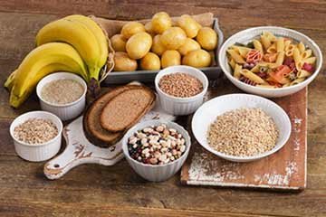

Lo basico para tener una buena alimentación
Se tiene que tomar en cuenta lo siguientes puntos o pasos:
Alimentos bajo en grasas.- Los nutriólogos coinciden en que comer menos grasas saturadas, en alimentos fritos, mantequilla, crema, margarina y aceites es una forma de hacer llevar una dieta saludable y la bajar de peso. Disminuir el consumo es en particular, importante para el corazón.  Carbohidratos y almidones.- Hemos olvidado lo importante que son el arroz, la pasta, las papas, el pan y los cereales para nuestra salud. Anteriormente se creía que el almidón era dañino, pero hoy se sabe que puede llegar a ser tan importante en una dieta adecuada, como la fibra. Alto contenido de fibra.- Aunque a veces no nos guste, la fibra mantiene nuestro aparato digestivo en movimiento y ayuda a bajar el colesterol, a prevenir los cálculos biliares, el cáncer de intestino y a mantener nuestro peso bajo control. La fibra se encuentra en cereales, en arroz integral, cebada, lentejas, frijoles y verduras. Vitaminas, minerales y antioxidantes.- Las verduras, frutas y granos contienen una gran cantidad de vitaminas y minerales que funcionan como antioxidantes. Numerosos estudios muestran que las personas que comen muchas legumbres y frutas tienen tasas más bajas de enfermedades del corazón y cáncer. Consumo moderado de azúcar.- El azúcar en cantidades modestas añade sabor y es un combustible útil para las personas activas. Sin embargo, consumirla en exceso agrega kilojules no deseados y puede desplazar otros alimentos más importantes. En forma masticable, el azúcar también puede causar caries. Poca sal.- La dieta moderna está cargada de sal y esto es perjudicial para el corazón. El 75% de la ingesta total de sal proviene de alimentos comerciales cotidianos; por lo tanto, es imperativo comprar productos de sal reducida o sin sal agregada. Grasas y aceites:No todas las grasas son perjudiciales,
además las grasas son necesarias en la dieta por tener sustancias
imprescindibles para el organismo y para el transporte de algunas
vitaminas. Tienen una función energética.
Legumbres, patatas, frutos secos: Combinan las tres
funciones (energética, plástica y reguladora).
Grasas y aceites:No todas las grasas son perjudiciales,
además las grasas son necesarias en la dieta por tener sustancias
imprescindibles para el organismo y para el transporte de algunas
vitaminas. Tienen una función energética.
Legumbres, patatas, frutos secos: Combinan las tres
funciones (energética, plástica y reguladora).